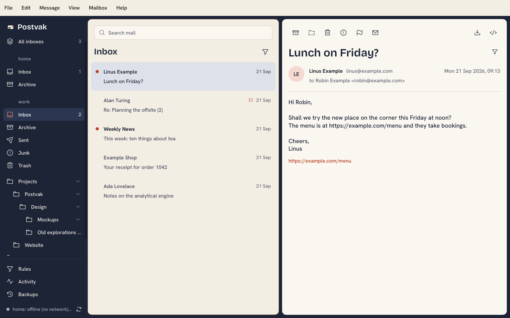
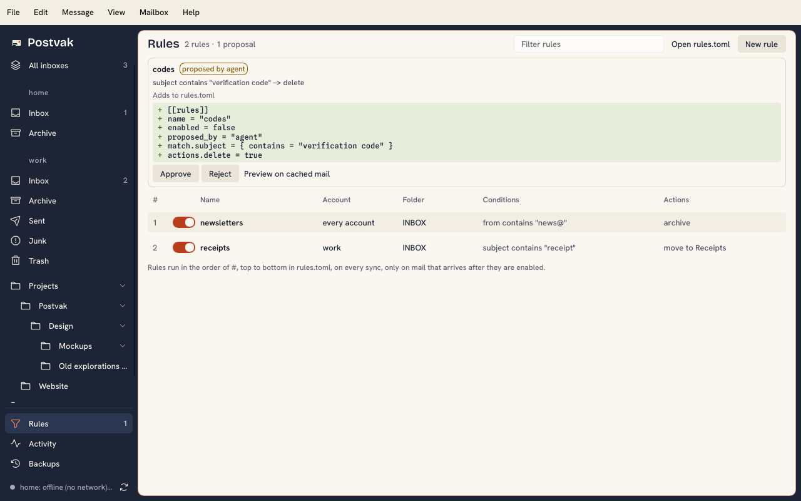

Predictable
The same mail gets the same outcome, every time. A model can file a message differently tomorrow, or delete one it misread.
Mail sorting for macOS and Linux
Postvak syncs your mail into a local store and runs your rules on every sync: move it, archive it, mark it read, or delete sign-in codes once you have used them. Test every rule with a dry run, and undo any delete.
$ brew install postvak-app/tap/postvak
[[rules]]
name = "used sign-in codes"
match.subject = { regex = "sign.?in|magic link" }
match.older_than = "1h"
match.read = true
actions.delete = true$ postvak rules test # dry run first
$ postvak service install # sort at login
$ postvak trash list # undo for 30 days
Many AI mail clients hand every message to a model and let it decide. Postvak sorts with rules you can read, and lets AI help you write them.
The same mail gets the same outcome, every time. A model can file a message differently tomorrow, or delete one it misread.
A rule is a few lines of TOML. rules test shows what it would do, and postvak log says which rule did what.
Mail is written by strangers. A rule matches patterns, so instructions hidden in a message cannot change what it does.
Your mail is never sent to a model to be sorted. Agents see only what you grant: by default senders and subjects, no bodies.
No tokens per message and no API key. Rules run on every sync, across years of mail, without a round trip to a model.
An agent over MCP reads your inbox and proposes a rule. You approve it once; from then on the rule does the work.
Agents propose, you approve
Postvak ships an MCP server. An agent can look at your inbox, write a rule and show its dry run, but the rule stays disabled until you approve it in the window or on the command line.
It sees only what you grant. By default that is folders, senders and subjects: no message bodies, and no moving or deleting mail. Bodies, acting on mail and approving rules are each a scope you add on purpose, and --account hides your other accounts.
$ postvak mcp install claude-desktop
A keyboard-driven window for reading, searching and approving rules. postvak gui
Every feature, with --json for scripts. List, search, move, test rules.
For Claude and other agents, scoped to what you grant. Senders and subjects by default.
Headless at login, on a server or in Docker. Works with any IMAP server.
Free and open source under MIT or Apache-2.0. Postvak reads and sorts mail; it does not send it.